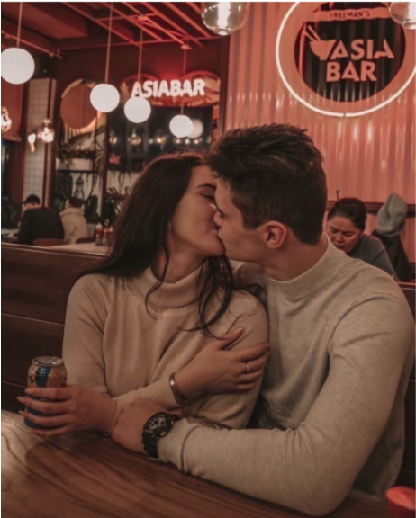
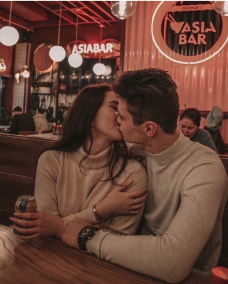

⚠️ +1407 Mulheres já tomaram o controle da mente masculina
Esses são prints REAIS de alunas que estão fazendo homem correr atrás sem entender por quê:


 


E você? Vai continuar assistindo outras viverem o que era pra ser seu?
QUERO SER A PR√ìXIMA A MANIPULAR ELE ü߆üî•‚ö†Ô∏è Aviso: Vagas pro teste gratuito s√£o limitadas e encerram em breve.